China Employee Termination: Pulse Watchtower Brief for Foreign Employers (Hourly Testing Run)
- For foreign employers, China termination governance is stronger when managed through a watchtower model: continuous visibility, early warning, and fast corrective routing.
- Most avoidable losses still come from delayed detection of route/evidence/settlement drift across legal, HR, manager, and payroll handoffs.
- A watchtower format gives non-local leadership a concise risk view with direct action priorities.
- Negotiated exits can reduce friction, but only if settlement text, payroll treatment, and communication records remain synchronized.
- City-level implementation variance remains material; local validation should remain a blocking release condition.
Plain-language legal context (first)
China is not an at-will termination environment. Employer-initiated termination should align with a lawful route under the Labor Contract Law framework and be executed with coherent evidence and consistent process conduct. For foreign teams, the practical sequence is:
- Confirm route legality.
- Confirm evidence integrity.
- Confirm communication + settlement consistency.
- Confirm payroll + local validation readiness.
- Confirm closure evidence completeness.
State Council implementation regulations and SPC labor-dispute interpretation remain critical because disputes often turn on consistency across these control points.
Pulse watchtower panel: 7 live alerts
Alert W1 — Route drift alert
Trigger: inconsistent route wording across legal/HR/manager files.
Risk: misaligned narrative can undermine defensibility.
Action: freeze progression; reissue one canonical route note.
Alert W2 — Evidence break alert
Trigger: chronology gap, ownership ambiguity, or material contradiction.
Risk: dispute posture weakens rapidly.
Action: hold employee-facing steps until evidence reconciliation passes.
Alert W3 — Script deviation alert
Trigger: delivered communication deviates from approved script.
Risk: trust and legal consistency decline.
Action: lock script and enforce deviation approval protocol.
Alert W4 — Settlement mismatch alert
Trigger: legal terms, payroll setup, and manager explanation do not match.
Risk: post-signature disputes and rework costs rise.
Action: enforce single settlement source sheet and cross-team revalidation.
Alert W5 — Payroll lock risk alert
Trigger: unresolved treatment assumptions near lock window.
Risk: incorrect entries become costly to unwind.
Action: trigger legal-payroll stop/go checkpoint.
Alert W6 — Local caveat alert
Trigger: city-level implementation validation incomplete.
Risk: release confidence overstated in local context.
Action: hold release until local sign-off completes.
Alert W7 — Closure integrity alert
Trigger: payment proof/archive checklist incomplete at closure stage.
Risk: weak audit/dispute readiness.
Action: block closure state change pending evidence-complete pack.
Practical implications for foreign employers
For overseas decision-makers, watchtower reporting improves intervention timing by surfacing problems before payroll lock or employee communication events. Instead of broad “on track” updates, leaders get alert-driven visibility: what broke, who owns the fix, and when resolution is due.
For operations teams, this model reduces late-cycle reversals and supports more predictable outcomes across multiple entities and cities.
Daily watchtower cycle (20 minutes)
Minute 0-4: alert scan
- Refresh W1-W2 status.
- Mark immediate holds where required.
Minute 4-8: communication + settlement scan
- Validate W3-W4 alignment.
- Assign remediation owners for open alerts.
Minute 8-12: payroll + local scan
- Validate W5-W6 before any release decision.
- Apply stop/go for unresolved alerts.
Minute 12-16: closure scan
- Validate W7 on near-closure cases.
Minute 16-20: leadership broadcast
- Report unresolved alerts with owner + ETA + next check time.
SOP by role
HR
- Maintain watchtower board and ownership map.
- Block progression on unresolved high-risk alerts.
- Capture employee communication records.
Legal
- Approve route rationale and key legal wording.
- Validate settlement legal coherence.
- Co-sign stop/go decisions on high-risk alerts.
Manager
- Provide date-stamped factual updates.
- Use approved communication script only.
- Escalate material changes immediately.
Payroll/Finance
- Validate settlement mapping and treatment assumptions.
- Enforce pre-lock readiness controls.
- Produce payment proof for closure evidence.
Compliance/Ops
- Audit alert transitions and reason codes.
- Track repeated alert patterns by city/team.
- Verify closure evidence-pack integrity.
Required document checklist
- Canonical route note
- Evidence chronology log
- Approved script version
- Settlement source sheet
- Payroll treatment mapping
- Local validation memo
- Payment proof + closure archive checklist
SLA baseline:
- route note within 1 business day,
- chronology pass within 2 business days,
- settlement/payroll sync before lock,
- closure archive within 2 business days after payment.
Exception playbook
W1 open (route drift)
- Stop progression.
- Reassess route with latest facts.
- Reissue route note before restart.
W2 open (evidence break)
- Freeze communication.
- Resolve chronology/ownership conflict.
- Resume only after verified pass.
W4 open (settlement mismatch)
- Use documented clarification route.
- Reconcile legal text and payroll mapping.
- Reapprove employee-facing language.
W5 open (payroll lock risk)
- Trigger stop/go before lock.
- Correct mapping and revalidate.
- Align explanation language.
W6/W7 open (local/closure)
- Hold release/closure.
- Complete local validation and evidence pack.
- Re-open only after completion confirmed.
System implementation notes
Core fields:
- case_id
- city
- watchtower_alert_status (W1-W7)
- route_status
- evidence_status
- script_status
- settlement_status
- payroll_status
- local_validation_status
- release_status
- unresolved_count
- closure_status
Control rules:
- immutable alert logs,
- mandatory reason codes for active alerts,
- auto-alert when unresolved_count > 1,
- release lock on unresolved W1-W6,
- closure lock on unresolved W7.
Common mistakes and prevention
Mistake: alert acknowledged but not owned
Prevention: owner + ETA required for every active alert.
Mistake: duplicate source files across teams
Prevention: enforce single-source policy for route/script/settlement docs.
Mistake: local validation handled informally
Prevention: W6 must remain a blocking field.
Mistake: closure marked after payment only
Prevention: require W7 evidence-complete pass.
Mistake: leadership sees status without risk signal
Prevention: report active alerts, not generic statuses.
What to do now (10 actions)
- Add W1-W7 fields to active case tracker.
- Reclassify open cases by active alerts.
- Publish canonical route notes.
- Resolve open chronology defects.
- Lock script version control.
- Standardize settlement source sheet.
- Apply pre-lock stop/go for W5.
- Assign local-validation owners for W6.
- Shift leadership updates to alert-based format.
- Review weekly alert trends and tune controls.
What to watch next
- Ongoing dispute sensitivity to evidence/procedure consistency.
- Settlement/payroll mismatch pressure near lock windows.
- City-level implementation variation requiring explicit checks.
- Deadline pressure increasing launch-before-ready behavior.
FAQ
1) Is this legal advice?
No. This is an operations governance brief for decision support.
2) Can unilateral routes still be used?
Potentially yes, where legal/factual conditions support them; evidence quality remains decisive.
3) Why involve payroll before final legal close?
Because settlement-treatment alignment directly affects compliance and employee-relations outcomes.
4) Is negotiated termination always lower risk?
No. It can help, but only with coherent execution.
5) What KPI should leadership start with?
Track active-alert-free release rate and median alert resolution time.
Legal appendix (secondary depth)
This run is anchored to the Labor Contract Law, State Council implementation regulations, and SPC labor-dispute interpretation. These sources define route boundaries and dispute-facing standards for evidence and process. Practitioner and market/business references translate legal structure into foreign-employer operational controls.
Disclaimer
This content is informational only and does not constitute legal, tax, or employment advice. Employers should seek qualified local counsel and tax advisors for case-specific decisions.
Sources
- National People’s Congress — Labor Contract Law of the PRC (English): http://www.npc.gov.cn/zgrdw/englishnpc/Law/2007-12/13/content_1384064.htm (accessed 2026-03-03).
- State Council — Implementation Regulations of the Labor Contract Law (Decree No. 535): https://www.gov.cn/gongbao/content/2008/content_1124615.htm (accessed 2026-03-03).
- Supreme People’s Court — Interpretation on Application of Law in Labor Dispute Cases (Fa Shi [2020] No. 26): https://www.court.gov.cn/fabu/xiangqing/243981.html (accessed 2026-03-03).
- China Briefing / Dezan Shira — Employee Termination in China (updated 2025-10-17): https://www.china-briefing.com/news/employee-termination-in-china/ (accessed 2026-03-03).
- Littler — Key Recent Developments in China’s Employment Law: https://www.littler.com/news-analysis/asap/key-recent-developments-chinas-employment-law-china-us-comparative-perspective (accessed 2026-03-03).
- PwC Worldwide Tax Summaries — PRC Individual: Taxes on Personal Income: https://taxsummaries.pwc.com/peoples-republic-of-china/individual/taxes-on-personal-income (accessed 2026-03-03).
Need local employment support in China?
If you need a compliance-first partner for hiring, payroll, and risk controls in China, China-Payroll.com can help evaluate the right setup.
Image Prompt Pack
Create a 16:9 hero image for article title: 'China Employee Termination: Pulse Watchtower Brief for Foreign Employers (Hourly Testing Run)'. Scene: global operations team evaluating workforce model options for China market entry. Include motifs: decision matri…